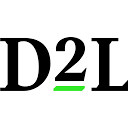

The Team
Built by researchers, for classrooms.
Youdahe Asfaw
Founder & CTO
Built the entire platform from scratch. 2+ years in EdTech. Hundreds of hours in classrooms. Presented research at UChicago and Johns Hopkins.
ML Research @ Hugging Face · Medtronic (AI) · Code2040
Kofi Osei
Co-founder & Research Lead
Research on precipitation forecasting using transformers and multi-modal systems. Published in IEEE. Co-leads AIED 2026 paper.
SWE @ HashiCorp · Goldman Sachs · IEEE Published · Code2040

Kevin Thai
Frontend
Univ. of Washington

Christie
Frontend
Florida International

Luke
Research
UC Berkeley
Jayviont Haing
Engineering
Univ. of Washington
Noah Moore
Engineering
Alabama A&M

Joshua Ekoja
Engineering
Wake Forest


For Context
What is an LMS?
A Learning Management System is the software every school uses to run courses — the operating system for education.
Course Materials
Syllabi, assignments, readings — uploaded and organized by the instructor.
Grades & Submissions
Students submit work, instructors grade it. The gradebook is the system of record.
Rosters & Enrollment
Every student, every section, every role — managed in one place.



These platforms cover 95%+ of US schools.
Traction & Market
Where we are. Where we're going.

Market Opportunity
50M K-12 students in the US
$500M+ addressable market at $10/student/year
Districts already pay $5-20/student for IXL, DreamBox, Lexia
AI in education: $3.6B → $73.7B by 2033 (35% CAGR)